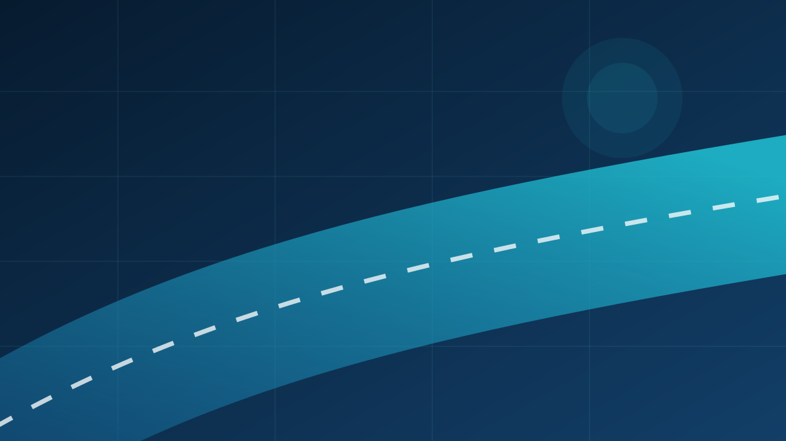

在交流中打开研究视野
课题组积极参与交通基础设施与材料领域的学术交流，通过报告、讨论和跨团队合作了解前沿问题，检验研究思路，也让青年成员在真实学术场景中成长。
记录每一次交流、探索与共同成长。

课题组积极参与交通基础设施与材料领域的学术交流，通过报告、讨论和跨团队合作了解前沿问题，检验研究思路，也让青年成员在真实学术场景中成长。
下方模块可直接复制，用于发布组会、会议、项目和团队活动。

组会 · 2026年7月28日2026年7月28日，课题组在渭水校区公路学院第一会议室召开组会。
网站采用道路、材料与能源的视觉语言，统一展示研究方向、团队成员、科研成果与招生信息。
了解团队在这里填写文献汇报、阶段成果汇报或专题研讨的日期与主要内容。
在这里填写参会、学术报告、访问交流或合作研究的真实信息。
严谨科研与健康、开放、有温度的团队氛围同样重要。
文献阅读、研究进展、方案讨论与论文表达。
会议报告、专家讲座、联合研究与开放合作。
在交流和陪伴中建立信任，分享科研之外的生活。
欢迎关注课题组研究动态，或联系我们开展学术交流。